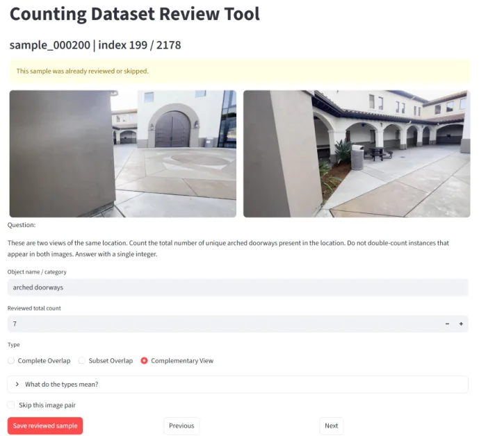
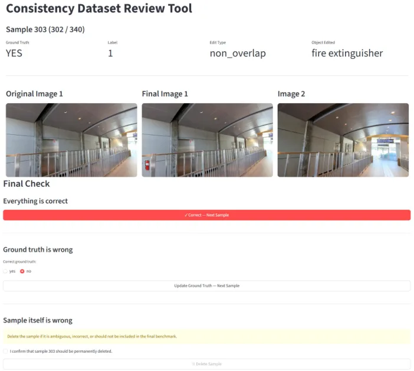
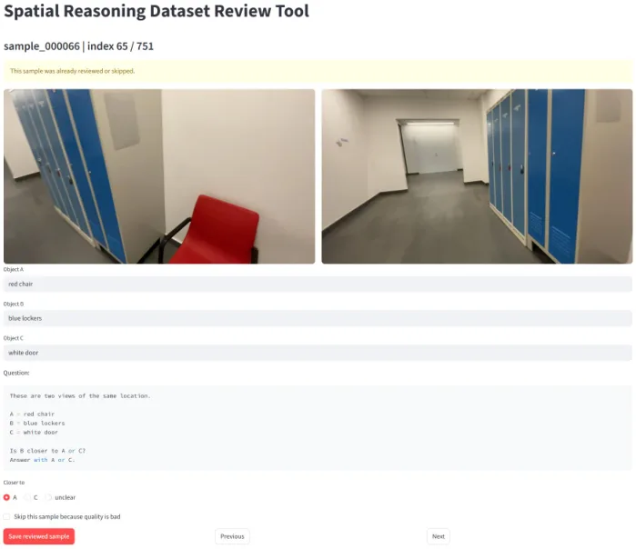
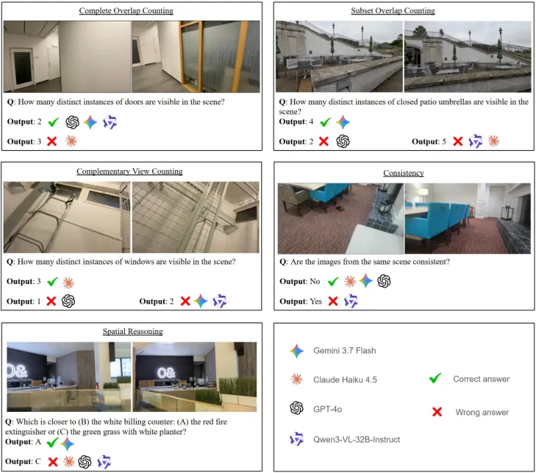

OneScene-Bench：视觉语言模型真的把多视角证据整合成一个场景了吗？
OneScene-Bench: Do Vision-Language Models Integrate Evidence Across Views?
基于 DL3DV-10K 构造 1,300 题（计数 700 / 一致性 300 / 空间推理 300），用重叠度与编辑可见性控制“是否必须跨视角整合”。12 个模型在互补视角计数上只有 4.5–50.0%（完全重叠 45.5–81.5%），一致性 47.0–55.7% 基本等于随机，而空间推理最高到 92.7%——说明“能处理多图”和“能把多视角整合成一个场景”是两种能力。
complementary-view counting
cross-view consistency
best spatial reasoning
verified questions
作者、单位与技术谱系 · Research context
作者与单位
研究脉络
- DL3DV-10K（Ling et al., CVPR 2024）方法基座关系：全部 1,300 道题的两视角图像都从 DL3DV-10K 的真实场景捕获序列中采样（帧间隔 10–25 帧，保证视角变化又有足够重叠），一致性题与空间题也复用同一数据源。[论文 §3 / 附录 A]
- SpatialMosaic-Bench（Lee et al., 2025, arXiv 2512.23365）方法上游关系：同样研究“多视证据在遮挡与有限重叠下如何整合”，但 OneScene-Bench 的推进是把“是否必须跨视角整合”显式做成可控变量，而不是只测整合表现。[论文 §2 与 Fig. 2(a)]
- MIRB / MIBench / MMIU 等多图评测线方法上游关系：这些基准覆盖多图感知、语义与推理关系，但多为“相关或连续图像”而非同一物理场景的多视角，因此无法区分 per-view 聚合与真正的场景级整合。[论文 §2]
合作网络
- MPII 单机构署名Max Planck Institute for Informatics → OneScene-Bench 四位作者关系：共同署名[论文首页署名]
- 公开代码与数据OneScene-Bench 论文 → github.com/swathisuhas/OneScene-Bench关系：官方代码[论文摘要]
- DL3DV-10K 数据依赖OneScene-Bench → DL3DV-10K关系：技术依赖（数据来源）[论文 §3 与参考文献 [21]]
单位与数据来源来自论文首页与正文；作者个人主页未在论文中给出，故未登记更细的机构角色。
方法本质拆解 · What actually changed
是不是微调？
完全不训练。这是一套评测基准，12 个被测模型都保持原样，使用同一套任务指令与开放式作答协议，只做推理。题目构造阶段用 Qwen3-VL-32B 辅助挖掘候选（提出可数类别、候选三元组），但所有标注都经人工核验，模板固定。
有没有额外约束？
约束体现在数据构造而非损失：计数题强制控制两视角的物体重叠度，一致性题强制控制编辑区域是否被两视角共享，空间题强制让证据可分布在两视角。这些约束保证“答对”必须依赖或不依赖跨视角整合，从而可被区分。
推理/后端到底做了什么？
推理就是多图 + 文本指令的单次前向，没有工具调用、没有外部聚合器；评测端用 GPT-4o 判断回答是否达到正确结论。为了诊断，作者额外做了无图输入、instruct/thinking 变体对比、以及把联合预测与 max/sum 聚合结果比对，这些都是离线分析，不进入模型。
方法本质是什么？
本质是把“跨视角整合是否为必要条件”变成一个可控变量：通过重叠度与可见性设计，把同一能力拆成“可蒙对”和“必须整合”两档，再用两档之间的落差衡量整合能力。它没有提出新模型，也没有改变任何推理流程。
输入（同一场景的两个视角 + 固定模板问题）→ 用重叠度/编辑可见性控制“是否必须建立跨视角对应” → 开放式作答 + GPT-4o 判定 → 通过“可蒙对档”与“必须整合档”的分数差，暴露模型是在整合还是在走 per-view 捷径。

桥接价值Bridge
桥接价值
我们常把多视角几何结果直接交给 VLM 做空间问答，但“答对”不等于“用上了跨视角信息”。OneScene-Bench 提供的正是这个区分工具：同一类计数题在完全重叠时可以取单视角最大值蒙对，在互补视角时则必须做实例级对应与去重。把它当作验收集，可以直接测出我们的几何前端到底贡献了什么——如果去掉位姿/对应后分数不掉，那说明模型一直在走 per-view 捷径。
方法与模块Method
方法摘要
全部样本来自 DL3DV-10K 真实多视角捕获，每题两张图、人工核验，共 1,300 题：计数 700（完全重叠 200 / 子集 300 / 互补 200）、跨视角一致性 300、空间推理 300。一致性题在“两视角共享区域”或“仅单视角可见区域”做局部编辑，前者构成真实矛盾、后者应被判为兼容；空间推理题给出 A/B/C 三个物体，要求判断 B 离 A 更近还是离 C 更近，且证据可以被拆到两个视角。评测用 GPT-4o 作 LLM judge，开放式作答。
可迁移模块
第一是可复用的三层计数分层：完全重叠、子集重叠、互补视角，分别对应“取最大值即可”“取最大值可蒙”“必须去重”三种整合需求。第二是“编辑可见性”对照：把差异放在共享区域 vs 单视角区域，能区分“检测到差异”与“理解哪些差异是视角造成的”。第三是聚合归因指标：统计联合预测与 max(C1,C2)、C1+C2 的一致率，用来判断模型是否只是把单视角结果聚合了一遍。

证据Evidence
关键证据与数字
Table 1：互补视角计数只有 4.5–50.0%，而完全重叠是 45.5–81.5%。具体地，Qwen3-VL-32B-Instruct 从 70.0/70.7 掉到 34.0，InternVL3.5-38B 从 72.0 掉到 14.5，Gemini 3.7 Flash 从 81.5 掉到 50.0，GPT-5.5 从 70.0 掉到 38.5。同一批模型的空间推理最高到 92.7%（GPT-5.5），Gemini 3.7 Flash 89.7%，说明“能比较远近”并不代表“能对齐实例”。一致性一栏全部落在 47.0–55.7%，其中 LLaVA-OneVision-2 与 Phi-4-multimodal 对所有样本都答 yes，因此在平衡集上恰好 50.0%。Table 3 的聚合归因显示：Qwen3-VL 在互补视角上联合预测与 max 的一致率 39.0%，与 sum 只有 18.0%。
边界与下一步Limits & Next Step
边界与风险
规模与设置都收得很紧：只有两视角、1,300 题、单一数据源（DL3DV-10K），作者在 Limitations 里也承认扩大数据与模型覆盖是未来工作。一致性是二分类任务，且“全答 yes”即可拿 50%，读这个数字时必须同时看 yes-rate 与类别平衡，否则会把退化行为当成及格。无图对照（Table 2）显示模型仍保留可观准确率（如 Qwen3-VL 完全重叠 37.5%、空间推理 63.7%），说明部分分数来自语言与答案分布先验。judge 使用 GPT-4o，与被测的部分闭源模型同代，存在评判偏差的可能，作者未报告 judge 与人工的一致性。
下一步实验
先在我们自己的链路上跑 per-view 下界：每张图单独提问，再用 max / sum 聚合，作为“没有跨视角整合”的基线；任何几何增强都必须明显超过这个下界才算有效。其次把视角数扩到 3–5，并加入带位姿的真值，检验“视角越多越好”在什么点饱和（论文在 N=2–6 的完全重叠设置里已经看到峰值早于 N=6）。最后补报 yes-rate、judge-人工一致性，以及按重叠度分层的置信区间，避免用单一均值掩盖互补视角的塌陷。





